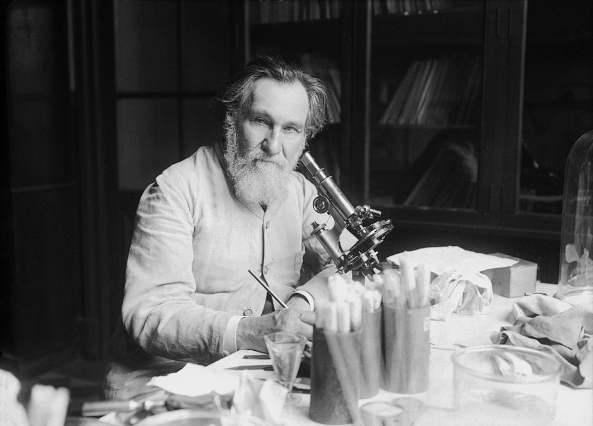

Dr. Élie Metchnikoff
Kharkiv Nobel Prize-Winner in Physiology and Medicine

Élie Metchnikoff in his laboratory, 1913
Here's a time line of Dr. Élie Metchnikoff:
- 1845 - Born in Ivanovka, Kharkov Ivanovka, Kharkov Governorate
- 1856 - Entered Kharkov Lycée where he developed his interest in biology.
- 1862 - Enrolled at Kharkov Imperial University for natural sciences, completing his four-year degree in two years.
- 1864 - Was advised to work with Rudolf Leuckart at the University of Giessen.
- 1865 - Discovered intracellular digestion in flatworm, and this study influenced his later works. Moving to Naples the next year he worked on a doctoral thesis on the embryonic development of the cuttle-fish Sepiola and the crustacean Nebalia.
- 1867 - Came to the University of St. Petersburg, where he won the Karl Ernst von Baer prize for the theses on the development of germ layers in invertebrate embryos.
- 1882 - Went to Sicily to set up his private laboratory in Messina. At Messina he discovered phagocytosis after experimenting on the larvae of starfish.
- 1887 - First observed that leukocytes isolated from the blood of various animals were attracted towards certain bacteria.
- 1888 - Went to Paris to seek Pasteur's advice. Pasteur gave him an appointment at the Pasteur Institute, where he remained for the rest of his life.
- 1906 - was awarded honorary degree from the University of Cambridge in Cambridge, UK, and the Copley Medal of the Royal Society.
- 1908 - He shared the Nobel Prize in Physiology or Medicine with Paul Ehrlich
"Old age is a phenomenon that can be studied by exact science, which over time, perhaps, will establish rules for maintaining health and strength at an age when now it is often necessary to rely on public charity."
-- Élie Metchnikoff